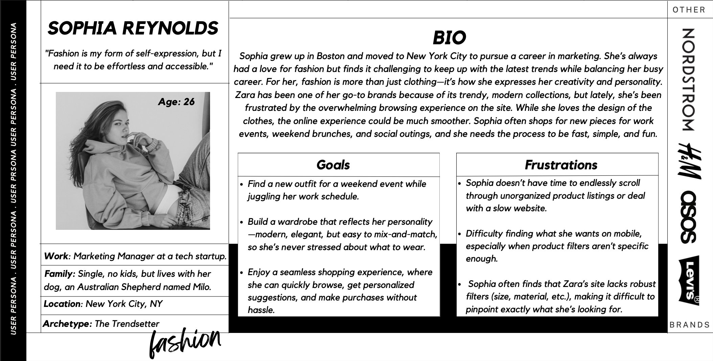
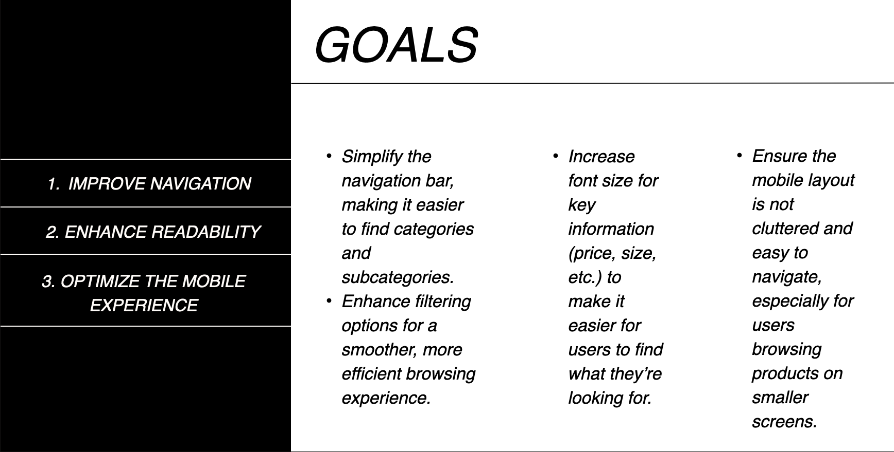
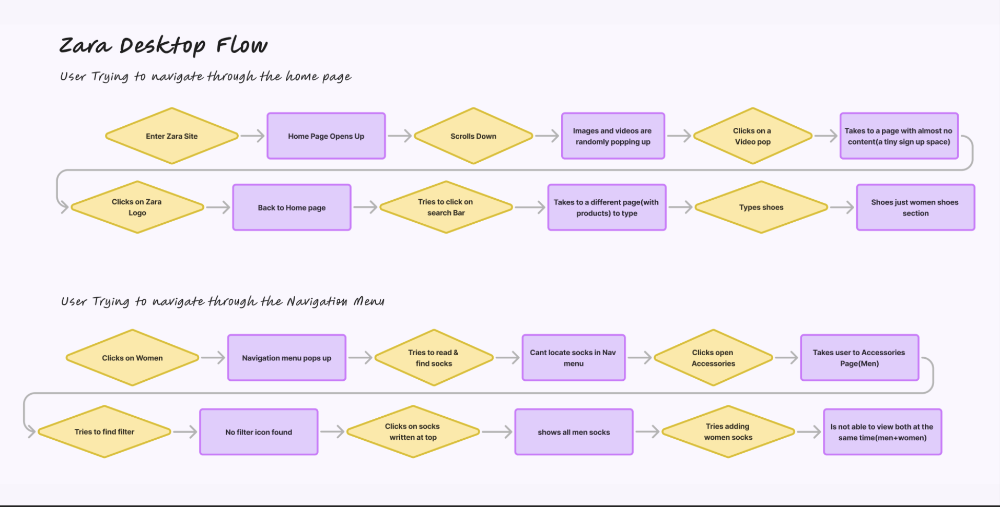
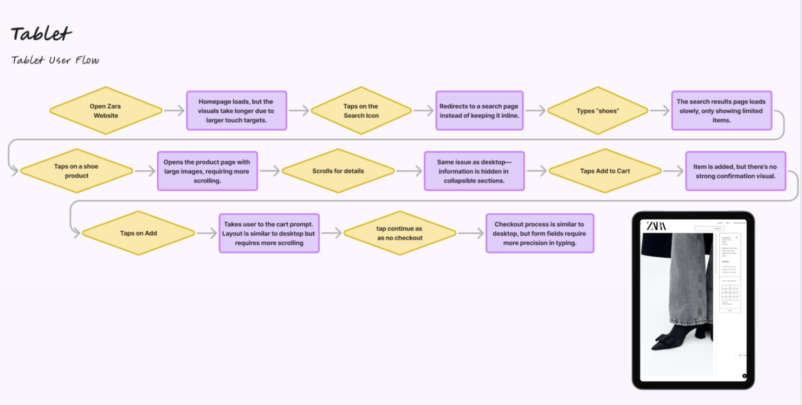
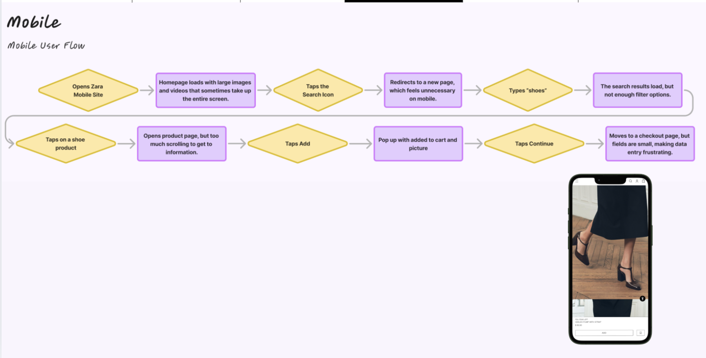
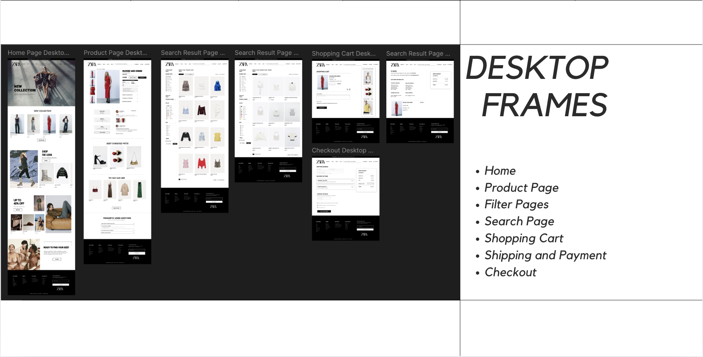
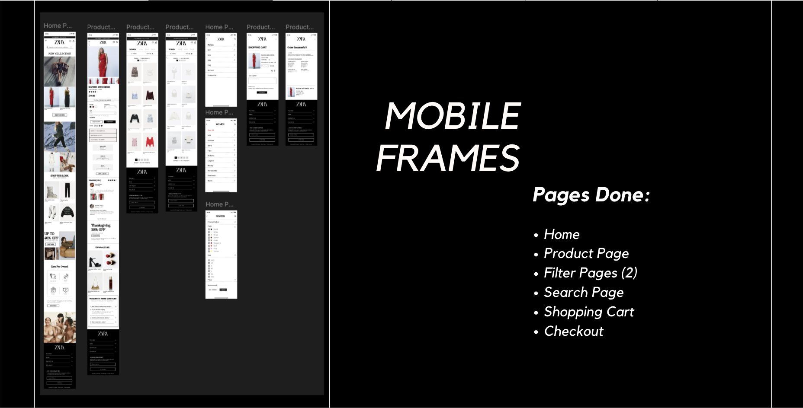

Typical Users
Zara’s e-commerce base skews toward young professionals who value trendiness, versatility, and efficiency. They juggle work, events, and social life meaning slow browsing or low readability is a deal-breaker.
Redesigning · Website
A research-backed redesign that keeps Zara’s aspirational aesthetic while fixing the navigation, filtering, and readability pain points that frustrate real shoppers.
As a loyal Zara shopper, I’m constantly inspired by the brand’s chic styling, but the online experience rarely feels as effortless as the clothes. The mix of portrait imagery, tiny typography, and buried filters leads to endless scrolling and guesswork. Friends echoed that friction, which made this the perfect challenge for IDM 211.
My goal was to protect the minimalist brand language while modernizing the UX for time-conscious, fashion-forward customers. The redesign focuses on stronger information hierarchy, clear calls-to-action, and streamlined flows across desktop, tablet, and mobile.
Zara’s e-commerce base skews toward young professionals who value trendiness, versatility, and efficiency. They juggle work, events, and social life meaning slow browsing or low readability is a deal-breaker.
28-year-old marketing manager in Brooklyn. Loves curated wardrobes and follows influencers for inspiration, yet feels overwhelmed by Zara’s filters and typography. She wants quick occasion-based suggestions and responsive mobile flows.
High-fashion photography, magazine-like layouts, and constantly refreshed collections keep Zara aspirational. The redesign keeps those strengths but reorganizes them for clarity.
Sophia is motivated by curation and speed. She bounces if filters feel clunky, but she’ll stay loyal if seasonal stories, sustainability, and tailored looks are surfaced fast. This persona guided decisions around navigation, layout, and content emphasis.

I ran a focused 9-question survey with 21 Zara shoppers who purchased within the last four months. Interviews took place while they navigated the site on desktop to surface the exact screens that broke their flow. The goal was to validate whether the frustration stemmed from pure UI choices or from deeper issues in the experience architecture.
After synthesizing interviews and organizing sticky notes, the responses collapsed into two recurring themes: speed and ease of use, and a desire for cohesive minimalism that still shows products clearly without endless scrolling.

More than half of participants mentioned the difficulty of navigating categories and filters. Some leave mid browse for ASOS, Mango, or H&M because Zara feels “busy” and hides the basics.
Many wanted a simplified interface that keeps Zara’s aesthetic but prioritizes landscape imagery and clear product presentation. They want to see outfits without jumping back and forth between screens.
These insights shaped the north star: fix navigation friction and polish product presentation without losing the brand’s edge. The redesign zeroes in on two main actions:
I ran an open card sort with three fashion-savvy shoppers. They prioritized familiar anchors such as Women, Men, and Sale, but quickly surfaced missing areas:
These insights informed a reorganized sitemap and category hierarchy that keeps the browsing mental model intact while introducing clearer entry points for campaigns and sustainability stories.
I mapped complete shopping journeys on desktop, tablet, and mobile to audit friction from entry through checkout. The diagrams uncovered repeated breaks in continuity whenever users searched or tried to filter.
On smaller screens you can swipe through the device flows. Tap or click any diagram to open the full-size image.



Identified gaps in Zara’s current experience, explored competitors, and learned how real shoppers describe their frustrations.
Sketched layout and navigation options that modernize the UI while still feeling like Zara.
Built wireframes and high-fidelity screens across desktop, tablet, and mobile with special focus on hierarchy and filters.
Tested flows with shoppers to gauge navigation clarity, scanning behavior, and path to cart efficiency.


Redesigning Zara’s experience underscored how closely aesthetics and usability need to work together. By grounding every decision in user research from card sorts to flow audits, I was able to propose a system that honors the elevated brand while actually supporting fast, intuitive shopping.
The next steps include refining microinteractions, stress-testing the design with more shoppers, and exploring how this design language could scale to in app and in store digital touchpoints.